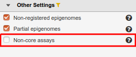
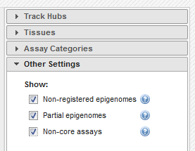
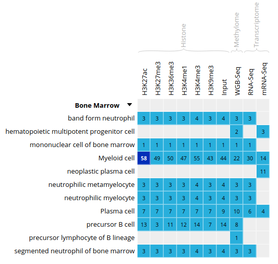
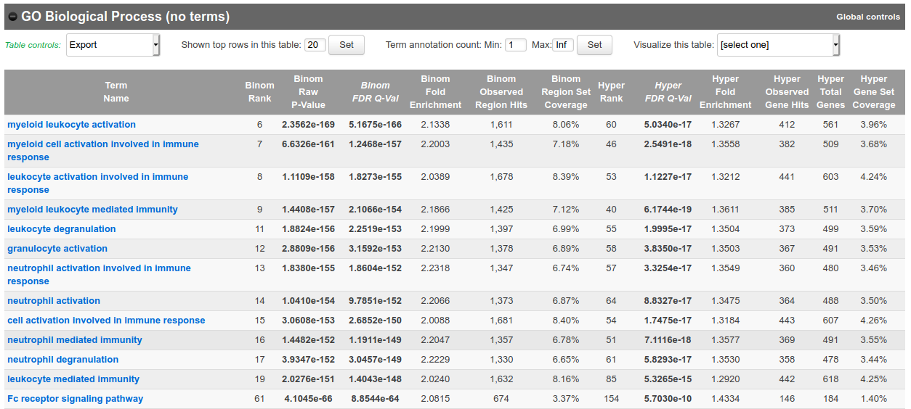

layout: tutorialpage permalink: /epi2020module5lab title: Epigenomics Lab 5 header1: Workshop Pages for Students header2: Downstream analyses & integrative tools image: /siteimages/CBWEpigenome-dataicon.jpg
by David Bujold, M.Sc.
We will now explore some of the tools that were covered in the lecture for module 5.
You should already have an open connection to Compute Canada, either through JupyterLab, or through an ssh terminal session.
From your Compute Canada terminal session, go to your home folder.
cd ~
You will be in your home folder.
module5 directory in your home directory with the "rm" command.module5 directory.
rm -rf ~/module5
mkdir -p ~/module5
cd ~/module5
Open a web browser on your computer, and load the URL http://epigenomesportal.ca/ihec .
In the Overview page, click on the "View all" button.
You will get a grid with all available datasets for IHEC Core Assays, on the hg38 assembly.
Go back to the Overview page (Home on the top menu), and select the following categories of datasets: On the "hg19" reference genome, "Histone" experiments for the "Muscle" cell type. Click on View selected.


You can see that the datasets are being displayed at a mirror of the UCSC Genome Browser. These are all peaks and signal for the chosen muscle H3K27ac ChIP-Seq datasets. In the Genome Browser, you can expand the tracks by changing visibility from "pack" to "full" and clicking the "Refresh" button.

You can also download these tracks locally for visualization in IGV.
You can get a whole genome overview of the similarity of a group of tracks by using the Portal's correlation tool.




At the bottom of the grid, click on the button "Correlate datasets".
You will see that tracks seem to correlate nicely, with activator marks clustering together and repressor marks forming another group. You can zoom out the view with the buttons at the lower right corner of the popup.


You should get something like this:

We will now attempt to detect motifs in peak regions for transcription factor binding sites using HOMER.

hg19.
TFBS) assays.
CTCF assay and the B cell cell type.

https://epigenomesportal.ca/tracks/ENCODE/hg19/71523.ENCODE.ENCBS400ARI.CTCF.peak_calls.bigBed.
mkdir homer
cd homer
wget https://epigenomesportal.ca/tracks/ENCODE/hg19/71523.ENCODE.ENCBS400ARI.CTCF.peak_calls.bigBed
module load mugqic/ucsc/20140212
bigBedToBed 71523.ENCODE.ENCBS400ARI.CTCF.peak_calls.bigBed 71523.ENCODE.ENCBS400ARI.CTCF.peak_calls.bed
mkdir output
mkdir preparsed
module load mugqic/homer/4.9.1
findMotifsGenome.pl 71523.ENCODE.ENCBS400ARI.CTCF.peak_calls.bed hg19 output -preparsedDir preparsed -p 2 -S 15
Next, we will try to identify GO terms connected to ChIP-Seq peaks calls using GREAT. We need bed files to use the GREAT portal. We will do the conversion from a bigBed file to a bed file on our Compute Canada session.
Human (hg38), filter the tissues list to keep only "Bone Marrow" tissues. 

ERS1027405:
Click "Download tracks" at the bottom of the grid.
On the download page, click on View Full URL List. This will give you a text list with all tracks of interest. Copy the link to this page in your clipboard, using the address provided in your browser's URL bar.

Open another terminal connection to get into Compute Canada, either through JupyterLab, or another terminal window.
Go to your module5 directory and create a place to put the material we will download.
cd ~/module5
mkdir great
cd great
wget -O trackList.txt 'https://epigenomesportal.ca/api/datahub/download?session=18731&format=text'
wget -i trackList.txt
module load mugqic/ucsc/20140212
bigBedToBed 58394.Blueprint.ERS1027405.H3K27ac.peak_calls.bigBed 58394.Blueprint.ERS1027405.H3K27ac.peak_calls.bed
Note: If you're under Linux / Mac, you can also install the UCSC tools locally, as they are a useful set of tools to manipulate tracks data, without requiring so much processing power.
sort -Rhead -n20000
sort -R 58394.Blueprint.ERS1027405.H3K27ac.peak_calls.bed > 58394.Blueprint.ERS1027405.H3K27ac.peak_calls.random.bed
head -n 20000 58394.Blueprint.ERS1027405.H3K27ac.peak_calls.random.bed > 58394.Blueprint.ERS1027405.H3K27ac.peak_calls.random_short.bed
scp user01@login1.cbw-oct-2020.calculquebec.cloud:/home/user01/module5/great/*.bed .
Load the GREAT website: http://bejerano.stanford.edu/great/public/html/
Provide the following input to the GREAT interface:
Submit the form.
In the results, for instance, you should obtain something like this for biological processes:

Bonus question: Why is your result slightly different from the screenshot?
scp -r user01@login1.cbw-oct-2020.calculquebec.cloud:/home/user01/module5/homer/output .
Then, open the de novo and known motifs HTML files in a browser for visualization. Do the identified motifs fit what we would expect?

We will now explore and learn how to use the Galaxy interface. In this short exercise, we will load a FASTQ dataset, run FastQC on it, and trim it to improve overall quality of reads.
While you can run Galaxy jobs without creating an account, features and number of jobs that can be executed at once will be limited. We should therefore create an account.
On the top menu, click on "User" > "Register"
Fill the email, password and public name boxes, and click on "Submit"
Click on "Return to the home page."
You are now logged in as a Galaxy user. For this exercise, we’ll use subsets of data from the Illumina BodyMap 2.0 project, from human adrenal gland tissues. The sampled reads are paired-end 50bp that map mostly to a 500Kb region of chromosome 19, positions 3-3.5 million (chr19:3000000:3500000). (source: https://usegalaxy.org/u/jeremy/p/galaxy-rna-seq-analysis-exercise)
Import the following two FASTQ files in your user space. To do so:
Paste/Fetch data sectionStart.After it finished to upload (green state), rename the two imported files, for better organization.
Pen icon for the first imported item, and enter the new name “adrenal_1” in the dialog.Eye icon.Run the tool FastQC: Comprehensive QC for adrenal_1.
Eye icon.Run this job again icon and simply change the input file to automatically reuse the same parameters.Many tools using FASTQ files in Galaxy require them to be “groomed”, meaning they will be standardized. This will ensure more reliability and consistency to those tools output. To groom our FASTQ files, we will use the tool FASTQ Groomer with default parameters.
You will now trim the reads, to improve the quality of the dataset by removing bad quality bases, clipping adapters and so on. Launch the Trimmomatic tool with default parameters, except:
Run FastQC again on both paired files, and compare results with pre-trimming FastQC output.
If you have time remaining, you can try running other types of jobs on Galaxy, or explore further the tools that we covered in this lab, using other types of datasets. For example, does running a GREAT query on another cell type yield the type of annotations that you'd expect?